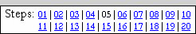

| PART I: YOUR FACE | |
| Step 05: Shape Inking |  |
We can now begin to create a nice, black outline version of our picture. We will work first on the long, unbroken lines in the image. We could simply draw our face freehand (and we will do some of this in the next step), but Photopea has a built-in system that will create smooth, perfect lines for us. This is accomplished using Shape Inking. Shape inking can seem pretty intimidating at first. It can seem like a horrible, technical, time-consuming, and complicated process. But, once you get a good sense of how to use the Pen tool, it really is easy to work with, comes in handy, and the lines it makes are pretty much flawless.
Before we get started, let's make sure we have the correct layer selected.
DRAW ONLY ON THE CARTOON LAYER - THIS IS VERY IMPORTANT!
If your Face layer is unlocked and you draw your cartoon lines on it then the lines you draw will merge with the blue image and will be impossible to separate,
AND YOU WILL HAVE TO START OVER.
When working with Photopea, be sure that all changes you make are being placed on the correct layer. By keeping our cartoon and photograph layers separate we can turn the visibility of our photo on and off as needed to see our progress and compare the cartoon we are making with our original image.
The two tools we'll be using are the Pen tool (located just under the Type tool) and the Direct Select tool (just under the Pen tool). We'll be using the Pen tool to draw points and the Direct Select tool to modify them. Before we get started, I should mention that there are actually several different ways to create nice, smooth lines using Photopea. We will cover just one, but this method will be useful in a large variety of situations you may encounter in the future.
When we create Shapes, we are drawing adjustable lines with points on them, which Photopea calls knots, that can be moved around and used to adjust the shapes until we have them exactly where we want them. Think of it as using a string to create a shape on the floor, then moving the string around any way we want to create any shape we want. Once we have the string in a position we like, we attach it to our surface.
Let's begin creating the outline of your face.
We need to make sure the correct tools are activated or the changes we will be making to our graphic in the following steps will not work
THIS IS VERY IMPORTANT - IF YOU DO NOT SELECT SHAPE ALL KINDS OF STRANGE THINGS WILL HAPPEN, SO FOLLOW THESE DIRECTIONS CAREFULLY!
The Fill color is currently set to red, but we actually don't want a Fill color at all. If a Fill color is defined, Potopea will try to make our outline into a complete shape. We just want an outline, so let's set the Fill color to nothing.
Now let's set the Stroke color to black.
The last thing we need to do is set the width of the line. This will depend on the size of the image each of us is working with, so I can't give you an exact amount. Not having an exact number is not a problem though as Photopea allows us to adjust the size of our line after we draw it to whatever size works best.
For my image, I'm going to set my Stroke width to 4.0. The following directions cover how to set the Stroke width to 4.0, and after we draw the line we will discuss how to adjust it to fit your image.
Let's all set the size to 4, and we can adjust the value later.
Let's start creating our first shape just above your ear. When using the Pen tool, clicking the left mouse button places an knot. If you drag the mouse a little bit while holding the mouse button down, you can create adjustment handles. If you don't add adjustment handles, the shape will just be a straight line to the next point you make and the curves it makes will be crappy. So the starting direction line is how you get Photopea to make nice, pretty curves. Take a look at the image below...
The blue circle is the knot that I dropped, the lines are the direction lines (when you drag the mouse, the direction lines are drawn an equal distance on each side of the knot), and the white dots are the adjustment handles. Remember that if you put a knot in the wrong place, you can hit the Delete key to get rid of it.
Let's take a quick look at what is going on with our Layers panel. You may notice that a small box has appeared on your Cartoon layer's thumbnail...
That little box indicates that the layer contains a vector element. When painting with the Brush tool, we are creating a raster image, but when using the Shape tool (or the Path tool, which is the other Pen tool option) we are actually creating a vector element that can rearranged and resized with no distortion. While our shapes will start as vector elements, we will quickly and easily convert them raster layers later on.
Make sure one more time that your Cartoon layer is currently selected and that three layers are locked. If the Cartoon layer is not the active layer, delete your knot by pressing the Delete key and then click the Cartoon layer to make it the active layer (it should be highlighted in gray).
If you do not have a line but instead have a strange shape that is filled in with
color... This is happening because you did not read and follow directions
7-9 above.
Be sure you are actually reading and following the directions. |
When working with shapes, we want to keep the lines simple and not too complicated. In the graphic above you can see that I am only using 3 points to create the curve and that I am only doing half of the top of his head. I could certainly do more of the head at once, but by using short, easy to work with lines I can make sure that I make an accurate outline.
|
A WORD OF WARNING AT THIS
POINT: If your knots look like this... |
If you go crazy placing knots don't worry, you can always select them and delete them later.
The Pen Tool is a difficult concept for some users to master, so don't worry too much if you have a hard time getting it to work correctly. Keep practicing and it will work. Using a Shape means you will have very clean, very neat lines.
|
If you would like some practice working with
the Pen tool, there are several awesome gaming website that allows you work with it.
|
Ok, back to work. Now that we have some knots in place, let's take a moment to look at how we can move existing knots and adjust the shape lines between them.
The last thing we need to do before we convert our shape into an actual line is to make sure that it is the proper width for our image.
A quick word of warning here. You don't want the width of your line to be too wide (it will be difficult to create the more detailed areas of your image) or too thin (it will be difficult to fill the parts of your head with color).
Once you have a stroke you are happy with, let's convert it to an ordinary line. To do this, we need to simply convert the layer that the shape is on into a raster layer. Remember how I mentioned that drawing with the Brush tool creates raster images while drawing with the Pen tool creates vector images. Luckily for us, Photopea has a quick and easy way to convert vector layers to raster layers: the Rasterize tool.
Notice that your the thumbnail for the Cartoon layer no longer has the small box icon that indicates the presence of a vector element and that your line is now a solid line without the path overlay...
At this point, we can no longer adjust our line using the adjustment handles, so I hope everything is where you want it (note that you could always press Ctrl+Z at this point to undo the Rasterize function and continue making adjustments to the line if you really need to).
You should now have something like this...
We are now ready to create a shape line around the rest of your head.
You may notice at this point that something odd is going on with your Layers panel...
The Shape 1 layer was created by Photopea to hold the new shape you created in the above direction. Don't worry, this is not a problem, and is actually helpful for what we are doing as it will allow us to work with several more features of Photopea.
You may notice something a little odd about your layers at this point. What happened to the Cartoon layer? The answer is simple: when you use Merge Down to combine two layers in Photopea, the newly created layer will be named whatever the top layer was originally named, which in our case was the Shape 1 layer. It may seem like this is a big deal, but it is not. We will continue to create the shapes we need and merge our layers together, and when our entire head is outlined we will simply rename the layer back to Cartoon.
Keep in mind that while the Pen tool is good for the long, important lines, it should not be used for every line in the picture! It could be, but if your pictures have many small lines like this one, you would simply be driven insane. These small lines don't need the detail of the longer ones, so you would be better off drawing them freehand with the mouse (which we will do in the next step)
When you finish the above step, you will have something like this...
Ain't he
handsome?
Keep something very important in mind at this point - your cartoon needs to extend to the bottom of the image. This will be very important to us when we create our Backing layer in Step 08...

We need to be able to select all of the pinkish area at once
Notice that in the picture I'm using for this tutorial that the lines of the neck go all the way to the bottom of the image so that the entire head is one contained unit. This will allow me to quickly and easily select everything around my head with one click so that we are only left with our cartoon head. If you have long hair that extends out the bottom of the photo you can ink that, if not you will have to ink and add color to your clothes. Take a look at the two outlines below...
In the left image, her hair was long enough that it extended out the bottom of the image and thus no additional work on her clothes needed to be done. In the right image however, she had to add shapes to her jacket and blouse so that the cartoon extended all the way to the bottom of the image. It does not matter at this point how you accomplish this, just make sure that your shapes extend all the way to the bottom of the picture.
Rename the layer containing your lines to Cartoon
At this point our cartoon is not perfect - we are missing some important parts around the eyes and ears, but these are short lines that we can quickly add in using the Brush tool and simply freehand ink them in the next step.
01 | 02 | 03 | 04 | 05 | 06 | 07 | 08 | 09 | 10 | 11 | 12 | 13 | 14 | 15 | 16 | 17 | 18 | 19 | 20